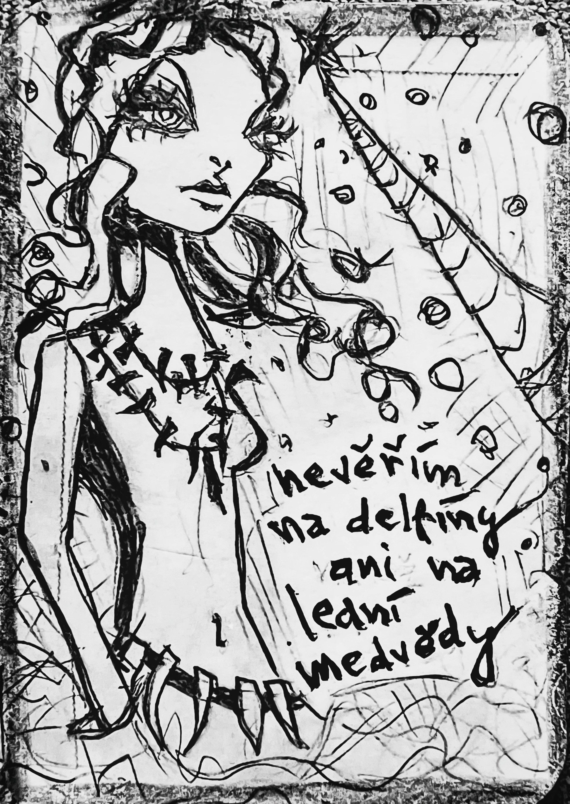

ilustrace · jednorožecFyzika jazyka · Karta Jednorožec
„nevěřím na delfíny ani na lední medvědy"
Jednorožec byl. To je první lež. Žil v krajině, kde se věřilo na všechno – na víly, mluvící stromy, svítící houby. Ale on nevěřil. Ne na delfíny, ne na lední medvědy. Říkal, že jsou vymyšlení. A přitom o nich věděl. Protože kdysi se utrhla kra, na ní lední medvěd, a pod ní delfín. Spojili se – ne z lásky, z logiky, která se tvářila jako nehoda. A z toho vznikl jednorožec. Když to zjistil, zpanikařil. Protože pokud je z reálných věcí, může být reálný. A pokud je reálný, přestává být jednorožec. Takže se rozhodl zapřít. Zrušit. Zneplatnit. Ale když se podíval do vody, uviděl odraz – a ten měl ploutev a srst. A roh.
Pohádka · čtěte pomalu
Přejeďte myší přes podtržené místo pro popis figury. Kliknutím na figuru v tabulce se označí v textu.
12 úhlů pohledu
Odpovězte rychle, bez opravování. Hledáme váš přirozený úhel pohledu.